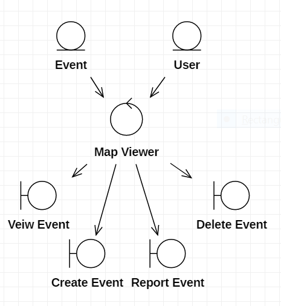
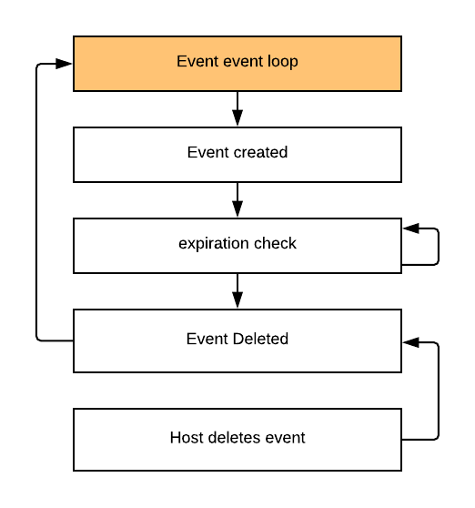

1. Introduction
Reach is a web/Android based application that enables its users to locate events occurring within a radius around their current location. The problem it solves is that, the ability to find events that are happening nearby within a short time is dependent on having a big network of friends to reach out to. Often times this network is unreliable in the short term and Reach solves this problem by giving users an alternative to a reliance on their network of friends.
1.1 Purpose
This document is a framework for Reach. This document is intended for whoever would like to gain an in depth understanding of the application as well as Reach's development team.
2. Objects
2.1 Object Diagram

2.2 Entity Objects
- User - user of Reach application
- Event - event location and information posted by user
2.3 Control Objects
- Map Viewer - view of the events in the area
2.4 Boundary Objects
- Create Event - enables user to create event
- View Event - display information of event to the user
- Delete Event - deletes event from map
- Report Event - allows user to report an event
3. Further Steps
3.1 Event Event Loop

4. Non Functional Attributes
- User will view map
- Events will appear on map
5. Classes